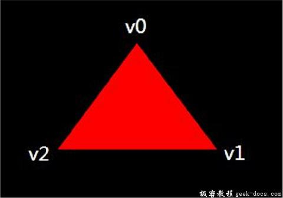

Vulkan 顶点输入，在接下来几个章节中，我们将会使用内存顶点缓冲区来替换之前硬编码到顶点着色器中的顶点数据。我们将从最简单的方法开始创建一个CPU可见的缓冲区，并使用memcpy将顶点数据直接复制到缓冲区，之后将会使用暂存缓冲区将顶点数据赋值到高性能的内存。
顶点着色器
首先要修改的是顶点着色器，不再包含顶点数据。顶点着色器接受顶点缓冲区的输入使用in关键字。
#version 450
#extension GL_ARB_separate_shader_objects : enablelayout(location = 0) in vec2 inPosition;
layout(location = 1) in vec3 inColor;layout(location = 0) out vec3 fragColor;out gl_PerVertex {
vec4 gl_Position;
};void main() {
gl_Position = vec4(inPosition, 0.0, 1.0);
fragColor = inColor;
}
inPosition和inColor变量是顶点属性。它们被顶点缓冲区中的每一个顶点指定，就像我们使用两个数组手动指定每个顶点的position和color一样。现在确保着色器被正确编译!
顶点数据
我们将顶点数组从着色器代码移到我们程序自定义的数组中。首先我们需要引入GLM库，它提供了像向量和矩阵之类的线性代数数据结构。我们使用这些类型指定position和颜色。
#include <glm/glm.hpp>
建立新的数据结构Vertex并定义两个属性，我们将会在顶点着色器内部使用:
struct Vertex {
glm::vec2 pos;
glm::vec3 color;
};
GLM很方便的提供了与C++类型匹配的可以在着色器中使用的矢量类型。
const std::vector<Vertex> vertices = {
{{0.0f, -0.5f}, {1.0f, 0.0f, 0.0f}},
{{0.5f, 0.5f}, {0.0f, 1.0f, 0.0f}},
{{-0.5f, 0.5f}, {0.0f, 0.0f, 1.0f}}
};
现在使用Vertex结构体作为顶点数组的元素类型。我们使用与之前完全相同的position和color值，但是现在它们被组合成一个顶点数组。这被称为 interleaving 顶点属性。

绑定描述
一旦数据被提交到GPU的显存中，就需要告诉Vulkan传递到顶点着色器中数据的格式。有两个结构体用于描述这部分信息。
第一个结构体VkVertexInputBingdingDescription，Vertex结构体中新增一个成员函数，并使用正确的数值填充它。
struct Vertex {
glm::vec2 pos;
glm::vec3 color; static VkVertexInputBindingDescription getBindingDescription() {
VkVertexInputBindingDescription bindingDescription = {}; return bindingDescription;
}
};
顶点绑定描述了在整个顶点数据从内存加载的速率。换句话说，它指定数据条目之间的间隔字节数以及是否每个顶点之后或者每个instance之后移动到下一个条目。
VkVertexInputBindingDescription bindingDescription = {};
bindingDescription.binding = 0;
bindingDescription.stride = sizeof(Vertex);
bindingDescription.inputRate = VK_VERTEX_INPUT_RATE_VERTEX;
我们所有的顶点数据都被打包在一个数组中，所以我们需要一个绑定。binding的参数指定了数组中对应的绑定索引。stride参数指定一个条目到下一个条目的字节数，inputRate参数可以具备一下值之一：
- VK_VERTEX_INPUT_RATE_VERTEX: 移动到每个顶点后的下一个数据条目
- VK_VERTEX_INPUT_RATE_INSTANCE: 在每个instance之后移动到下一个数据条目
我们不会使用instancing渲染，所以坚持使用per-vertex data方式。
属性描述
第二个结构体描VkVertexInputAttributeDescription述如何处理顶点的输入。我们需要在Vertex中增加一个新的辅助函数。
#include <array>...static std::array<VkVertexInputAttributeDescription, 2> getAttributeDescriptions() {
std::array<VkVertexInputAttributeDescription, 2> attributeDescriptions = {}; return attributeDescriptions;
}
如函数圆形所示，该结构体为两个。一个属性描述结构体最终描述了顶点属性如何从对应的绑定描述过的顶点数据来解析数据。我们有两个属性，position和color，所以我们需要两个属性描述结构体。
attributeDescriptions[0].binding = 0;
attributeDescriptions[0].location = 0;
attributeDescriptions[0].format = VK_FORMAT_R32G32_SFLOAT;
attributeDescriptions[0].offset = offsetof(Vertex, pos);
binding参数告诉了Vulkan每个顶点数据的来源。location参数引用了vertex shader作为输入的location指令。顶点着色器中，location为0代表position，它是32bit单精度数据。
format参数描述了属性的类型。该格式使用与颜色格式一样的枚举，看起来有点乱。下列的着色器类型和格式是比较常用的搭配。
- float: VK_FORMAT_R32_SFLOAT
- vec2: VK_FORMAT_R32G32_SFLOAT
- vec3: VK_FORMAT_R32G32B32_SFLOAT
- vec4: V_FORMAT_R32G32B32A32_SFLOAT
如你所见，你应该使用颜色数量与着色器数据类型中的分量个数匹配的格式。允许使用比着色器中的分量个数更大的范围，但是它将会被默认丢弃。如果低于着色器分量的数量，则BGA组件将使用默认值(0, 0, 1)。颜色类型(SFLOAT, UINT, SINT) 和位宽度应该与着色器输入的类型对应匹配。如下示例：
- ivec2: VK_FORMAT_R32G32_SINT,由两个32位有符号整数分量组成的向量
- uvec4: VK_FORMAT_R32G32B32A32_UINT, 由四个32位无符号正式分量组成的向量
- double: VK_FORMAT_R64_SFLOAT, 双精度浮点数(64-bit)
format参数在属性数据中被隐式的定义为字节单位大小，并且offset参数指定了每个顶点数据读取的字节宽度偏移量。绑定一次加载一个Vertex，position属性(pos)的偏移量在字节数据中为0字节。这是使用offsetof macro宏自动计算的。
attributeDescriptions[1].binding = 0;
attributeDescriptions[1].location = 1;
attributeDescriptions[1].format = VK_FORMAT_R32G32B32_SFLOAT;
attributeDescriptions[1].offset = offsetof(Vertex, color);
color颜色属性与position位置属性的描述基本一致。
管线顶点输入
我们现在需要在createGraphicsPipeline函数中，配置图形管线可以接受重新定义的顶点数据的格式。找到vertexInputInfo结构体，修改引用之前定义的两个有关输入顶点的description结构体:
auto bindingDescription = Vertex::getBindingDescription();
auto attributeDescriptions = Vertex::getAttributeDescriptions();vertexInputInfo.vertexBindingDescriptionCount = 1;
vertexInputInfo.vertexAttributeDescriptionCount = static_cast<uint32_t>(attributeDescriptions.size());
vertexInputInfo.pVertexBindingDescriptions = &bindingDescription;
vertexInputInfo.pVertexAttributeDescriptions = attributeDescriptions.data();
图形管线现在准备接受vertices容器封装后的顶点数据，并将该格式的顶点数据传递到vertex shader。如果开启了validation layers运行程序，我们将会看到无顶点缓冲区绑定的提示。所以下一章节我们将会创建顶点缓冲区vertex buffer并把顶点数据存储在里面，最终GPU通过顶点缓冲区读取到顶点数据。